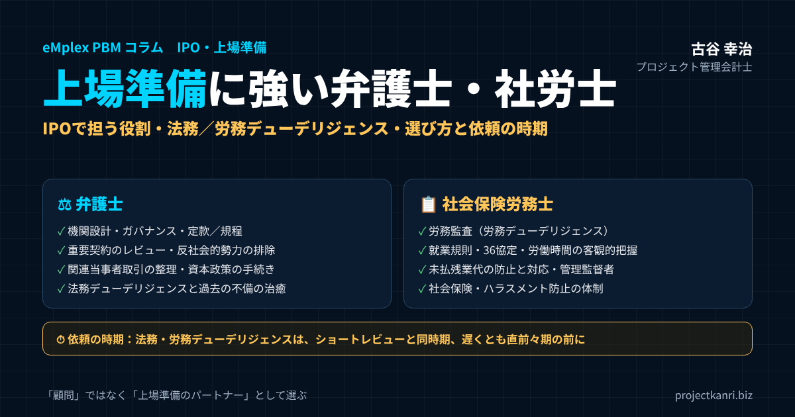

上場準備に強い弁護士・社労士の選び方―IPOで弁護士と社会保険労務士が担う役割、法務・労務デューデリジェンス、未払残業代の対応、依頼の時期と連携の実務

結論：上場準備の弁護士・社労士は「顧問」ではなく「上場準備のパートナー」として選ぶ
この記事の要点
- 弁護士の役割：機関設計・規程・契約・反社排除・関連当事者取引・資本政策・法務DD
- 社労士の役割：労務監査・就業規則と36協定・労働時間の把握・未払残業代の防止・社会保険
- 選び方：上場準備の支援実績、専門性、改善の実行までの伴走、回答の速さ、事業への理解
- 時期：法務・労務のDDはショートレビューと同時期、遅くとも直前々期の前に
- 連携：労務紛争は弁護士、日常の労務管理は社労士。両者の方針を一つに
プロジェクト管理会計士の古谷です。前回のコラムでは、上場準備における監査法人の選び方を取り上げました。今回は、監査法人と並んで上場準備に欠かせない専門家である、弁護士と社会保険労務士、いわゆる社労士について考えます。
上場準備というと、会計や内部統制、事業計画に目が向きがちです。しかし実際には、上場の審査では、法令を守る体制が整っているか、労務の管理に問題がないかが、厳しく確認されます。どれほど業績が良くても、反社会的勢力との関係が疑われる、多額の未払残業代が見つかる、重要な契約に問題がある、といった事態になれば、上場のスケジュールは大きく遅れ、場合によっては上場そのものが難しくなります。
私は、エンプレックスでCFOとして上場準備に携わり、ホリプロでは上場会社の経営企画として開示やグループ経営管理に携わりました。その中で、法務と労務の論点が、上場準備の大きな山場になる場面を何度も見てきました。そして、その山場を乗り越えられるかどうかは、上場準備をよく知る弁護士と社労士の支えがあるかどうかに大きく左右されました。
結論から申し上げます。上場準備の弁護士と社労士は、日常の相談に応じる顧問としてではなく、上場準備のパートナーとして選ぶべきです。上場の審査で何が問われるのかを知り、会社の現状とのギャップを洗い出し、上場までのスケジュールの中で解消していく。その力を持つ専門家を、早い段階から味方につけることが、上場準備を円滑に進める鍵です。
本稿では、上場準備に関わる専門家の全体像を確認したうえで、弁護士と社労士それぞれの役割、法務と労務のデューデリジェンスの論点、上場準備に強い専門家の選び方、依頼の時期と費用の考え方、両者の連携、そしてプロジェクト型ビジネスに特有の論点までを、順を追ってお伝えします。
なお、本稿では、特定の法律事務所や社労士事務所を推薦することはしません。専門家の良し悪しは、会社の規模や業種、課題によって変わるからです。その代わりに、上場準備に強い専門家を見極めるための視点と、面談で確認すべき項目を、できるだけ具体的にお伝えします。
上場準備に関わる専門家の全体像
上場準備には、多くの専門家が関わります。まず、全体像を整理しておきます。
| 専門家 | 主な役割 | 関与 |
|---|---|---|
| 監査法人 | 財務諸表の監査（直前々期・直前期）、ショートレビュー | 必須 |
| 主幹事証券会社 | 上場準備の指導、引受審査 | 必須 |
| 弁護士 | 機関設計・規程・契約・反社排除・資本政策・法務DD | 実質的に不可欠 |
| 社会保険労務士 | 労務監査・就業規則・労働時間管理・社会保険 | 実質的に不可欠 |
| 税理士 | 税務申告・税務リスクの確認 | 必要に応じて |
| 司法書士 | 登記（増資・役員変更・定款変更等） | 必要に応じて |
| IPOコンサルタント | 上場準備の実務支援・体制整備 | 必要に応じて |
| 証券代行・印刷会社 | 株主名簿管理、開示書類の作成支援 | 上場時に必要 |
監査法人は財務諸表の監査を、主幹事証券会社は上場準備全体の指導と引受審査を担います。この二者は、上場に必須の存在です。これに対して、弁護士や社労士は、上場の制度上で必ず関与しなければならない存在ではありません。しかし、上場の審査で確認される法令の遵守や労務の管理の体制を整えるうえで、実質的には欠かせない専門家です。
それぞれの専門家は、見ている観点が異なります。監査法人は会計の観点から、証券会社は上場の適格性の観点から、弁護士は法律の観点から、社労士は労務の観点から、会社を確かめます。大切なのは、これらの専門家の役割を整理し、互いに連携しながら、会社の課題を漏れなく解消していくことです。監査法人の選び方については、前回のコラムで詳しく解説しています。
上場準備で法務・労務が山場になる典型的な場面
上場準備の現場で、法務と労務が山場になる典型的な場面をご紹介します。いずれも、私がこれまでの経験の中で、さまざまな会社で目にしてきた場面を一般化したものです。
一つ目は、創業期の株式の手続きの不備が見つかる場面です。創業のころ、知人に株式を譲渡したが、取締役会の承認の手続きが行われていなかった。増資の際の株主総会の議事録が見当たらない。こうした不備は、上場準備の法務デューデリジェンスで見つかることが多く、関係する株主の協力を得て手続きを整える必要があります。株主との連絡に時間がかかれば、その分、スケジュールに影響します。
二つ目は、労務の監査で未払の残業代が見つかる場面です。勤怠の記録はきちんと付けていたつもりでも、管理監督者として扱っていた役職者が実態として管理監督者に当たらない、固定残業代を超えた分の支払が漏れていた、といった問題が見つかります。対象の社員と期間を特定し、精算の方針を決め、制度を見直すまでには、数か月を要することもあります。
三つ目は、関連当事者との取引の整理の場面です。社長が個人で所有する建物を会社が借りている、社長の親族の会社に業務を委託している。こうした取引は、条件が会社にとって妥当かどうかが確認され、不要なものは解消を求められます。取引の解消には、相手との交渉や、代わりの取引先の確保が必要になることもあります。
四つ目は、外注の取引の実態が問われる場面です。プロジェクト型ビジネスでは、業務委託の契約で外部の技術者に作業を依頼していることが多くあります。その実態が、発注側の指揮命令のもとで働く、労働者の派遣に近いものになっていないかが確認されます。
どの場面も、早い段階で見つけ、専門家の助言を受けて計画的に対応すれば、乗り越えられる課題です。問題は、上場の直前になって初めて見つかることです。だからこそ、上場準備の初期に、法務と労務の棚卸しを行うことが大切なのです。
上場準備で弁護士が必要な理由
上場会社には、未上場の会社とは比べものにならない水準の法令の遵守と、ガバナンスの体制が求められます。上場の審査では、企業の継続性や健全性、コーポレート・ガバナンスと内部管理の体制の有効性などが確認されますが、その多くは法律の問題と深く関わっています。
たとえば、取締役会や株主総会が、会社法に沿って適切に運営されているか。重要な契約に、会社にとって著しく不利な条項や、上場の妨げになる条項がないか。反社会的勢力との関係を排除する体制が整っているか。過去に、法令に違反する取引や行為がないか。株式や新株予約権の発行の手続きが、適法に行われてきたか。こうした論点は、いずれも弁護士の専門の領域です。
また、上場準備の過程では、過去の手続きの不備が見つかることも珍しくありません。創業の初期に、株主総会の議事録が作られていなかった、新株の発行の手続きに不備があった、といったことです。こうした不備を、どのように治癒し、審査に耐えられる状態にするのかは、弁護士の判断が必要です。
さらに、上場後を見据えた体制づくりも重要です。インサイダー取引の防止、適時開示の体制、内部通報の制度。上場会社として求められるこれらの体制を、上場の前から整えておく必要があります。
上場準備で弁護士が担う主な業務
上場準備で弁護士が担う主な業務を整理します。
| 領域 | 主な内容 |
|---|---|
| 機関設計・ガバナンス | 取締役会・監査役会等の設置、社外役員、定款変更、株主総会・取締役会の運営 |
| 規程の整備 | 取締役会規程、職務権限規程、関連当事者取引管理規程、インサイダー取引防止規程など |
| 契約のレビュー | 重要契約の不利な条項、チェンジ・オブ・コントロール条項、反社排除条項 |
| 反社会的勢力の排除 | 取引先・株主・役員の確認の仕組み、判明時の対応手順 |
| 関連当事者取引 | 役員・大株主等との取引の解消、条件の妥当性、承認手続き |
| 資本政策の手続き | 新株・株式譲渡・ストック・オプション・種類株式の適法な手続き |
| 法務デューデリジェンス | 過去の手続きの不備・紛争・許認可・知的財産の調査と治癒 |
| 上場後の体制 | 内部通報制度、適時開示体制、コンプライアンス体制 |
なかでも重要なのが、機関設計とガバナンスの整備です。上場を目指す会社は、取締役会や監査役会、あるいは監査等委員会などの機関を設置し、社外取締役や社外監査役を選任する必要があります。どの機関設計を選ぶのか、定款をどう変更するのか、取締役会の規程をどう整えるのか。弁護士の助言のもとで、会社の実態と将来の姿に合った設計を行います。
反社会的勢力の排除の体制も、上場の審査で厳しく確認される論点です。取引先、株主、役員について反社会的勢力との関係がないかを確認する仕組み、契約書への反社会的勢力の排除の条項の導入、関係が判明した場合の対応の手順。弁護士は、こうした体制の整備を支援します。反社チェックについては、別のコラムでも詳しく取り上げています。
関連当事者との取引の整理も、弁護士の重要な役割です。役員や大株主、その親族や関係会社との取引は、会社の利益を損なう取引でないかが審査で確認されます。上場の前に、不要な取引は解消し、必要な取引は条件の妥当性を確かめ、適切な手続きで承認する必要があります。
資本政策の実行の局面でも、弁護士の関与は欠かせません。新株の発行、株式の譲渡、ストック・オプションの発行、種類株式の設計。これらの手続きを、会社法に沿って適法に進め、後に問題とならないよう書類を整えます。
反社会的勢力の排除：弁護士とつくるチェックの仕組み
上場の審査で、最も厳しく確認される論点の一つが、反社会的勢力との関係です。反社会的勢力との関係が判明すれば、上場は極めて難しくなります。だからこそ、上場準備の初期から、反社会的勢力を排除する仕組みを整えておく必要があります。
| 要素 | 内容 |
|---|---|
| 対象 | 新規取引先、株主、役員・従業員の候補、既存取引先 |
| 方法 | 記事検索、専門調査会社のデータベースなど |
| タイミング | 取引・就任の前、既存先は定期的に |
| 契約 | 反社でない旨の表明と、判明時の解除条項 |
| 判明時の手順 | 報告経路、事実確認、取引解消、警察・弁護士への相談 |
| 規程 | 反社会的勢力排除規程として定め、記録を残す |
仕組みの中心は、確認の対象と方法、タイミングを決めることです。新たに取引を始める先、株主、役員や従業員の候補について、取引や就任の前に確認を行います。既存の取引先や株主についても、定期的に確認を行います。確認の方法としては、記事の検索、専門の調査会社のデータベースの利用などがあり、どの方法で、どこまで確認するのかを規程で定めます。
契約書には、反社会的勢力ではないことの表明と、関係が判明した場合に契約を解除できる条項を入れます。既存の契約にこの条項が入っていない場合は、覚書などで追加していきます。
そして、万一、関係が疑われる先が見つかった場合の対応の手順を決めておきます。誰に報告し、どのように事実を確かめ、取引をどう解消するのか。警察や弁護士への相談の経路も含めて、あらかじめ定めておくことが大切です。反社チェックの実務については、別のコラムでも詳しく解説しています。
法務デューデリジェンス：過去の不備を洗い出す
上場準備の初期に行うことが望ましいのが、法務デューデリジェンス、つまり法務の観点からの会社の調査です。弁護士が、会社の設立以来の書類や契約、手続きを調べ、上場の妨げになりうる問題を洗い出します。
| 項目 | 確認すること |
|---|---|
| 会社の組織・手続き | 定款、株主総会・取締役会の議事録、登記の整合 |
| 株式 | 発行・譲渡の手続き、株主名簿、ストック・オプション |
| 重要な契約 | 主要取引先・業務委託・ライセンス・借入の契約条項 |
| 紛争 | 係争中・潜在的な訴訟、クレーム |
| 許認可・法令遵守 | 事業に必要な許認可、業法・個人情報保護などへの対応 |
| 知的財産 | 商標・著作権・ソフトウェアの権利の帰属 |
| 関連当事者・反社 | 関連当事者取引、反社会的勢力との関係の有無 |
法務デューデリジェンスで見つかることが多いのが、過去の手続きの不備です。株主総会や取締役会の議事録の欠落、株式の発行や譲渡の手続きの不備、株主名簿の記載の誤りなどです。こうした不備は、放置すれば、株主の権利をめぐる争いや、審査での指摘につながります。弁護士の助言を受けて、追認の決議や書類の整備などで治癒していきます。
重要な契約の調査も大切です。主要な取引先との契約に、会社の支配権が変わった場合に契約を解除できる条項、いわゆるチェンジ・オブ・コントロールの条項や、競業を制限する条項など、上場や将来の事業の展開の妨げになる条項がないかを確かめます。
法務デューデリジェンスで見つかった課題は、労務の課題と同じく、一覧にして優先順位をつけ、担当者と期限を決めて解消していきます。課題の解消には時間がかかるものもあるため、上場準備の初期に調査を行い、全体のスケジュールに組み込むことが大切です。
上場準備に強い弁護士の選び方
では、上場準備に強い弁護士は、どのように選べばよいのでしょうか。面談で確認したい項目を整理します。
| 観点 | 確認すること |
|---|---|
| 上場準備の実績 | どの市場の上場を、何社、どの立場で支援したか |
| 専門性 | 会社法・ガバナンス・資本政策・契約の領域に強いか |
| 体制 | 担当弁護士とチーム、繁忙時の対応 |
| 回答の速さ | 監査法人・証券会社の質問への短い期限に対応できるか |
| 事業への理解 | 法的な正しさだけでなく実務的な解決策を示せるか |
| 連携 | 社労士・監査法人・証券会社との連携の経験 |
| 費用 | 顧問契約と個別業務の範囲、見積りの内訳 |
最も重視していただきたいのは、上場準備の支援の実績です。上場の審査で何が問われ、どのような論点で指摘を受けやすいのかは、実際に上場準備を支援した経験がなければ分かりません。どの市場への上場を、何社程度、どのような立場で支援してきたのかを確認してください。
次に、会社法とガバナンスの専門性です。上場準備の法務の中心は、機関設計、株主総会や取締役会の運営、株式の手続きといった会社法の領域です。この領域に強いかどうかを確認します。
そして、レスポンスの速さと、ビジネスへの理解です。上場準備の期間中は、監査法人や証券会社からの質問に、短い期限で回答を求められることが多くあります。弁護士の回答が遅れれば、全体のスケジュールが遅れます。また、法律の観点からの正しさだけでなく、会社の事業や経営の判断を理解したうえで、実務的な解決策を示してくれるかどうかも重要です。
弁護士の探し方としては、主幹事証券会社や監査法人、ベンチャーキャピタルからの紹介、上場準備の経験のある経営者や管理部門の責任者からの紹介が有力です。上場準備の支援の実績は、法律事務所のウェブサイトで公開されていることもあります。紹介を受けた場合も、複数の弁護士と面談し、比較したうえで決めることをお勧めします。
既存の顧問弁護士と、上場準備に強い弁護士
すでに顧問弁護士がいる会社も多いと思います。その場合、上場準備も顧問弁護士に任せるべきか、上場準備に強い弁護士に別に依頼すべきか、迷われるかもしれません。
顧問弁護士が、上場準備の支援の経験を持っているのであれば、会社の事情をよく知っている分、心強い存在です。一方で、顧問弁護士の専門が、訴訟や債権の回収、一般的な契約の相談などで、上場準備の経験がない場合には、上場準備の法務は、別の弁護士に依頼することも検討してください。
二人の弁護士に依頼する場合は、役割の分担を明確にしておくことが大切です。たとえば、日常の契約の相談や紛争は顧問弁護士に、機関設計、法務デューデリジェンス、資本政策、上場の審査への対応は上場準備に強い弁護士に、といった形です。両者の間で情報を共有し、助言が食い違わないよう調整することも必要です。
上場準備で社労士が必要な理由：労務は審査の重点項目
上場準備において、近年、特に重要性が高まっているのが労務です。働き方の改革に関する法令の改正が続き、労働時間の管理や割増賃金の支払に対する社会の目は厳しくなっています。上場の審査でも、労務の管理の体制は重点的に確認される項目の一つです。
労務の問題が上場準備で重く見られる理由は、二つあります。一つは、財務への影響です。未払の残業代が見つかれば、その精算のために多額の費用が発生し、業績に影響します。もう一つは、企業の健全性と継続性への影響です。長時間の労働や、ハラスメントの放置が明らかになれば、会社の信頼は損なわれ、人材の確保にも影響します。
社労士は、労働や社会保険に関する法令の専門家です。就業規則や各種の労使協定の整備、労働時間の管理の仕組みづくり、社会保険の手続き、そして労務の監査を通じて、会社の労務の管理の体制を、上場会社に求められる水準に引き上げる役割を担います。
なお、労務の監査を有償で行う専門の業務は、社労士の業務の領域とされています。上場準備の労務の調査は、原則として社労士に依頼することが望ましいでしょう。
社労士の探し方も、弁護士と同様に、主幹事証券会社や監査法人、上場を経験した会社からの紹介が中心になります。すでに給与の計算や社会保険の手続きを社労士に委託している会社では、その社労士が上場準備の労務の監査の経験を持っているかどうかを、まず確認してください。
上場準備で社労士が担う主な業務
上場準備で社労士が担う主な業務を整理します。
| 領域 | 主な内容 |
|---|---|
| 労務監査（労務DD） | 法令違反・リスクの洗い出しと改善提案 |
| 就業規則・規程 | 就業規則・賃金規程の実態との整合、法改正への対応 |
| 労使協定 | 36協定の締結・届出、変形労働時間制・裁量労働制の協定 |
| 労働時間の管理 | 客観的な労働時間の把握、勤怠の運用ルール |
| 賃金・残業代 | 割増賃金の計算、固定残業代・管理監督者の制度の見直し |
| 社会保険 | 加入の漏れの確認、手続き |
| 安全衛生・ハラスメント | 健康診断・面接指導、ハラスメント防止の体制 |
中心となるのは、労務の監査、いわゆる労務デューデリジェンスです。社労士が、会社の就業規則や労使協定、労働時間の記録、賃金の計算、社会保険の加入の状況などを調べ、法令に沿っていない点や、リスクの高い点を洗い出します。そのうえで、課題ごとに改善の方法を提案し、その実行を支援します。
就業規則と労使協定の整備も、社労士の重要な役割です。就業規則が実態と合っていない、法改正に対応していない、といったことは、上場準備の会社ではよく見られます。時間外労働や休日労働に関する協定、いわゆる36協定の締結と届出、変形労働時間制や裁量労働制を採用する場合の協定の整備も、社労士が支援します。
労働時間の管理の仕組みづくりも欠かせません。勤怠の記録が実態と合っているか、客観的な方法で労働時間を把握しているか。社労士は、勤怠の管理の方法や運用のルールを整え、未払の残業代が生まれない仕組みをつくることを支援します。
社会保険・労働保険の加入と手続き
労務の監査で見落とされがちなのが、社会保険と労働保険の加入の状況です。健康保険と厚生年金保険、雇用保険、労災保険は、要件を満たす社員を加入させる義務があります。
上場準備の会社でよく見られるのが、短時間で働く社員やアルバイト、試用期間中の社員、役員などの加入の判断の誤りです。短時間の労働者の社会保険の適用は、法改正により段階的に拡大されており、以前は加入の対象でなかった社員が、対象となっていることもあります。
加入の漏れが見つかった場合は、さかのぼって加入の手続きを行い、保険料を納付する必要が生じることがあります。社労士は、加入の状況を確認し、必要な手続きを支援します。社会保険の手続きは社労士の独占業務でもあり、上場準備の会社にとって、社労士は日常の手続きの面でも頼りになる存在です。
労務デューデリジェンス（労務監査）で確認される主な論点
上場準備の労務の監査で確認されることが多い論点を整理します。
| 論点 | よくある問題 |
|---|---|
| 労働時間の把握 | 自己申告のみ、勤怠とPCログ・入退室記録の乖離 |
| 割増賃金 | 計算の誤り、端数処理、未払残業代 |
| 36協定 | 未締結・未届出、上限（原則月45時間・年360時間）の超過 |
| 管理監督者 | 肩書きだけで扱い、実態（職務・権限・待遇）が伴わない |
| 固定残業代 | 含まれる時間が不明確、超過分の未払 |
| 社会保険 | 加入要件を満たす社員の未加入 |
| 雇用契約・労働条件 | 雇用契約書・労働条件通知の不備 |
| 有給休暇 | 年5日の取得義務への未対応 |
| 安全衛生 | 健康診断、長時間労働者への医師の面接指導 |
| ハラスメント | 防止の方針・相談窓口・対応手順の未整備 |
最も重い論点が、労働時間の把握と割増賃金の支払です。労働時間は、タイムカードやパソコンの使用の記録、入退室の記録など、客観的な方法で把握することが求められます。自己申告だけに頼っていると、申告の時間と実際の時間がずれ、未払の残業代が生まれる原因になります。勤怠の記録と、パソコンの使用の記録や入退室の記録との差が大きくないかは、監査でよく確認されます。
36協定も重要です。時間外労働や休日労働をさせるには、36協定を締結し、労働基準監督署に届け出る必要があります。時間外労働には、原則として月四十五時間、年三百六十時間という上限があり、特別な事情がある場合でも、さらに上限が設けられています。協定の内容と、実際の時間外労働の状況が合っているかが確認されます。
管理監督者の扱いも、よく問題になる論点です。労働基準法上の管理監督者に当たれば、労働時間や休日の規定が適用されませんが、その判断は、肩書きではなく、職務の内容、権限、待遇などの実態で行われます。課長などの役職者を一律に管理監督者として扱い、残業代を支払っていない会社では、実態が伴わず、未払の残業代の問題に発展することがあります。
固定残業代、いわゆるみなし残業代の制度も、運用を誤りやすい論点です。固定残業代に何時間分の残業が含まれているのかが明確でない、含まれる時間を超えた分の残業代を支払っていない、といった問題がないかが確認されます。
このほか、社会保険の加入の漏れ、雇用契約書や労働条件の通知の不備、年五日の有給休暇の取得、健康診断や長時間労働者への医師の面接指導といった安全衛生、ハラスメントの防止の体制なども、確認の対象になります。
客観的な労働時間の把握：何で、どう記録するか
労務の論点の中心にある労働時間の把握について、もう少し詳しく見ておきます。労働安全衛生法では、会社は、タイムカードやパソコンの使用の記録などの客観的な方法により、労働者の労働時間の状況を把握することが求められています。
| 方法 | ポイント |
|---|---|
| タイムカード・ICカード | 出退勤の時刻を客観的に記録 |
| 勤怠システム | 打刻と申請・承認の記録を残す |
| パソコンの使用記録 | ログオン・ログオフの時刻と勤怠の差を確認 |
| 入退室の記録 | 在社時間と勤怠の差を確認 |
| 自己申告 | 単独では不十分。客観的記録との照合と差の理由の確認が必要 |
上場準備の会社でよく見られるのが、自己申告の勤怠の記録と、パソコンの使用の記録や入退室の記録との間に、大きな差がある状態です。勤怠の記録では十八時に退勤しているのに、パソコンは二十一時まで使われている。こうした差があると、記録されていない時間が労働時間に当たるのではないかという疑いが生じ、未払の残業代の問題に発展しかねません。
大切なのは、差を見つけたときの運用を決めておくことです。一定の時間以上の差がある場合には、上長が本人に理由を確認し、労働時間であれば勤怠を修正する。業務と関係のない在社であれば、その理由を記録する。こうした運用を続けることで、勤怠の記録の信頼性が保たれます。
テレワークの場合も、労働時間の把握の考え方は同じです。パソコンの使用の記録や、業務システムへのログインの記録などで、労働時間の状況を把握します。場所を問わず、客観的に把握できる仕組みを整えておくことが、上場準備の労務の基本です。
未払残業代が見つかったら：上場準備での向き合い方
労務の監査で、未払の残業代が見つかることは、上場準備の会社では決して珍しくありません。大切なのは、見つかった問題から目をそらさず、誠実に、計画的に対応することです。
まず、未払の範囲を調査します。どの社員に、どの期間について、いくらの未払があるのかを、労働時間の記録をもとに算出します。賃金の請求の権利の時効は、法改正により、現在は当分の間三年とされています。調査の対象の期間は、この時効の期間も踏まえて、社労士や弁護士と相談して決めます。
次に、精算の方針を決めます。未払が確認された場合は、社員に支払う必要があります。精算の金額が大きい場合は、業績や資金繰りへの影響も考慮して、精算の時期や方法を検討します。上場の審査の過程では、未払の有無やその対応の状況が確認されることがあるため、主幹事証券会社や監査法人とも早めに相談しておくことが大切です。
そして、最も重要なのが、再発の防止です。未払を精算しても、その原因となった労働時間の把握の方法や、賃金の計算の仕組みが変わらなければ、また同じ問題が生まれます。客観的な方法による労働時間の把握、勤怠と賃金の計算の連動、管理監督者や固定残業代の制度の見直しなど、仕組みの改善までを一体で進めます。
未払の残業代の問題は、上場準備の初期に発見できれば、計画的に対応できます。上場の直前になって発覚すると、スケジュールに大きな影響が出かねません。労務の監査は、できるだけ早い段階で行うことをお勧めします。
ハラスメント防止と内部通報制度
上場準備で整えておきたいもう一つの領域が、ハラスメントの防止と、内部通報の制度です。
職場のパワーハラスメントの防止は、法律により、規模を問わずすべての事業主の義務となっています。セクシュアルハラスメントや、妊娠・出産・育児休業などに関するハラスメントの防止も、事業主に求められています。ハラスメントを許さない方針の明確化と周知、相談の窓口の設置、相談があった場合の迅速で適切な対応、再発の防止。これらの体制を整えておく必要があります。
内部通報の制度も重要です。法令の違反や不正の兆候を、早い段階で会社が把握し、自ら是正するための仕組みです。一定の規模以上の事業者には、公益通報者保護法により、通報に対応する体制の整備が義務づけられています。上場準備の会社では、規模にかかわらず、通報の窓口、通報者の保護、調査と是正の手続きを整えておくことが望まれます。
ハラスメントや内部通報の対応には、労務の知見と法務の知見の両方が必要です。社労士には相談の窓口の運用や就業規則の懲戒の規定の整備を、弁護士には調査の進め方や法的な判断を相談するなど、両者の力を組み合わせて体制を整えます。内部通報が上場の延期につながった事例については、別のコラムでも取り上げています。
上場準備に強い社労士の選び方
上場準備に強い社労士を選ぶ際に、確認したい項目をまとめます。
| 観点 | 確認すること |
|---|---|
| 上場準備の実績 | 労務監査・上場準備の支援の経験と社数 |
| 監査の視点 | リスクの大きさで優先順位をつけた改善提案ができるか |
| 伴走 | 就業規則改定・協定整備・社員説明まで実行を支援するか |
| システム理解 | 勤怠・給与システムの設定と就業規則の整合を見られるか |
| 法改正への対応 | 働き方改革関連の改正に精通しているか |
| 連携 | 弁護士・監査法人との連携 |
| 費用 | 監査の範囲・報告書・改善支援が含まれるか |
最も重視していただきたいのは、上場準備の労務の支援の実績、特に労務の監査の経験です。上場準備の労務の監査は、日常の手続きの代行や給与の計算とは、求められる視点が異なります。上場の審査でどのような論点が問われるのかを理解し、リスクの大きさに応じて優先順位をつけて改善を提案できるかどうかが重要です。
次に、改善の実行まで伴走してくれるかどうかです。監査で課題を指摘するだけでなく、就業規則の改定、労使協定の整備、勤怠の管理の仕組みの見直し、社員への説明まで、実行を支援してくれる社労士であれば、上場準備はずっと円滑に進みます。
そして、勤怠や給与のシステムへの理解です。労働時間の管理の仕組みは、多くの場合、勤怠のシステムの設定や運用と一体です。システムの設定が就業規則と合っていない、といった問題を見つけ、改善を提案できる社労士は、上場準備の心強い味方になります。
面談で弁護士・社労士に聞きたい質問
候補の弁護士や社労士と面談する際に、聞いておきたい質問の例をまとめます。
| 相手 | 質問の例 |
|---|---|
| 弁護士 | 当社の業種・規模で、上場準備でよく問題になった法務の論点は何ですか |
| 弁護士 | 法務DDはどの範囲を、どのくらいの期間で行いますか |
| 弁護士 | 監査法人や証券会社からの質問に、どのくらいの期間で回答できますか |
| 社労士 | 上場準備の労務監査で、よく見つかる問題は何ですか |
| 社労士 | 未払残業代が見つかった場合、どのように対応を支援してくれますか |
| 社労士 | 勤怠システムの設定の見直しまで支援してもらえますか |
| 双方 | 弁護士（社労士）とどのように連携しますか。紹介できる専門家はいますか |
こうした質問への答え方から、専門家の経験の深さと、会社への向き合い方が見えてきます。具体的な事例を交えて答えてくれる専門家は、実際に上場準備の現場を経験していることが多いものです。一方、一般論しか返ってこない場合は、上場準備の経験が十分でない可能性があります。
面談では、会社の側からも、事業の内容、上場の目標の時期と市場、現在の法務と労務の体制と課題を、できるだけ正直に伝えてください。課題を隠さずに伝えることで、専門家は的確な支援の計画を立てることができます。
弁護士と社労士の役割分担と連携
上場準備では、弁護士と社労士の役割が重なる領域もあります。両者の役割の分担を整理しておきます。
| 領域 | 主に担う専門家 |
|---|---|
| 日常の労務管理・就業規則・労使協定 | 社労士 |
| 社会保険の手続き | 社労士 |
| 労務監査（労務DD） | 社労士（紛争リスクは弁護士と連携） |
| 労働紛争の交渉・訴訟 | 弁護士 |
| 個別労働紛争の裁判外紛争解決手続（ADR）の代理 | 特定社会保険労務士・弁護士 |
| ハラスメント防止・内部通報 | 弁護士・社労士の双方 |
| 会社法・契約・資本政策・法務DD | 弁護士 |
労務の領域では、日常の労務の管理、就業規則の整備、社会保険の手続き、労務の監査は、主に社労士の役割です。一方、労働に関する紛争、たとえば未払の残業代をめぐる交渉や訴訟、解雇の有効性が争われる事案などは、弁護士の役割です。社労士の中でも、特定社会保険労務士の資格を持つ人は、個別の労働関係の紛争について、裁判外の紛争解決の手続きで代理を行うことができますが、訴訟の代理はできません。
上場準備では、労務の監査で見つかった課題の中に、法的な紛争に発展するおそれのあるものが含まれていることがあります。たとえば、過去に退職した社員との間で、未払の残業代をめぐる争いが生じている場合です。こうした場合には、社労士と弁護士が連携して、対応の方針を決める必要があります。
また、ハラスメントの防止の体制や内部通報の制度、労働に関する規程の整備などは、弁護士と社労士の双方の知見が生きる領域です。両者に、互いの調査の結果や助言の内容を共有してもらい、会社としての方針を一つにまとめることが大切です。上場準備に強い弁護士と社労士の中には、日頃から連携している専門家同士もいます。相手の専門家を紹介してもらうのも、一つの方法です。
監査法人や主幹事証券会社との関係でも、弁護士と社労士の連携は重要です。監査法人や証券会社から、法務や労務に関する質問を受けた際に、誰が、どのように回答するのかを決めておきます。専門家の意見書や調査の報告書が、審査の過程で役立つこともあります。
弁護士・社労士に依頼する時期：上場準備のスケジュールの中で
弁護士と社労士には、いつ依頼すればよいのでしょうか。上場準備のスケジュールの中での目安を示します。
| 時期 | 弁護士 | 社労士 |
|---|---|---|
| N-3期以前 | 法務DD、機関設計の方針 | 労務監査（1回目） |
| 直前々期（N-2期）の前 | 定款・規程の整備、過去の不備の治癒 | 就業規則・協定の整備、勤怠の見直し |
| 直前々期（N-2期） | 関連当事者取引の整理、契約の見直し | 未払残業代への対応、運用の定着 |
| 直前期（N-1期） | 運用状況の確認、上場後の体制 | 労務監査（2回目）、法改正対応の確認 |
| 申請期（N期） | 審査対応 | 審査対応 |
上場準備の状況により前後します。
結論から言えば、どちらも、できるだけ早い段階で依頼することをお勧めします。特に、法務と労務のデューデリジェンスは、監査法人のショートレビューと同じ時期、遅くとも直前々期が始まる前に実施しておくことが望ましいでしょう。過去の手続きの不備や、未払の残業代の問題は、解消に時間がかかります。早く見つければ、それだけ計画的に対応できます。
労務の監査で労務のリスクが低いことを示せれば、監査法人や証券会社からの評価も高まり、監査法人に受け入れてもらいやすくなるという側面もあります。監査法人の受け入れの余力が逼迫している今、上場準備の初期に労務と法務の課題を整理しておくことは、上場準備全体を前に進める力になります。
直前期には、改善した体制がきちんと運用されているかを、改めて確認します。労務であれば、就業規則や労使協定に沿った運用が続いているか、法改正への対応ができているか。法務であれば、取締役会や株主総会の運営、関連当事者との取引の承認の手続きが、規程どおりに運用されているかを確かめます。
弁護士・社労士の費用の考え方
弁護士や社労士への依頼の費用は、依頼する業務の範囲、会社の規模、課題の多さによって大きく異なります。一般には、継続的な相談に応じる顧問の契約と、法務や労務のデューデリジェンスのような個別の業務の契約に分けて考えます。
費用を比較する際には、金額だけでなく、何が含まれているのかを確認することが大切です。デューデリジェンスであれば、調査の範囲、報告書の形式、改善の提案や実行の支援が含まれるのか。顧問の契約であれば、相談の範囲と回数、書類の作成やレビューが含まれるのか。見積りを依頼する際には、自社の規模や状況を具体的に伝え、複数の専門家から見積りを取って比較することをお勧めします。
上場準備の専門家の費用は、決して小さくはありません。しかし、上場の直前に法務や労務の問題が発覚し、スケジュールが遅れた場合の損失、あるいは未払の残業代の精算の負担と比べれば、早い段階で専門家に依頼する費用は、十分に見合う投資だと私は考えています。
また、専門家への依頼の範囲を、会社の状況に応じて段階的に広げていくことも一つの方法です。たとえば、最初は法務と労務のデューデリジェンスだけを依頼し、その結果を見て、課題の解消の支援や顧問の契約に進む、といった形です。最初の調査の質と、その後の提案の内容を見てから、継続の依頼を判断することができます。
プロジェクト型ビジネスに特有の法務・労務の論点
システム開発、Web制作、コンサルティング、建設などのプロジェクト型ビジネスには、特有の法務と労務の論点があります。
| 論点 | 注意点 |
|---|---|
| 偽装請負 | 請負・準委任の契約で、発注側が作業者に直接指揮命令していないか |
| 顧客先常駐 | 常駐先での指揮命令の実態と契約形態の整合 |
| フリーランス・外注 | フリーランス法の条件明示・支払期日、取適法への対応 |
| 工数と労働時間 | 案件の工数記録と勤怠の労働時間の乖離 |
| 裁量労働制 | 対象業務の範囲、本人同意など要件の充足 |
一つ目は、偽装請負のリスクです。業務を外部に委託する際、契約は請負や準委任であるにもかかわらず、発注する側が委託先の作業者に直接、細かな指揮命令をしていると、実態は労働者の派遣とみなされ、違法な偽装請負と判断されるおそれがあります。顧客の現場に社員を常駐させる場合も、同じ論点があります。契約の形と実態が合っているかは、法務と労務の両面から確認すべき論点です。
二つ目は、フリーランスとの取引です。二〇二四年十一月に施行されたいわゆるフリーランス法により、フリーランスに業務を委託する際には、取引の条件の明示や、報酬の支払の期日などのルールを守ることが求められます。下請法の改正による取適法とあわせて、外注先との取引の実務を見直す必要があります。フリーランス法と取適法については、別のコラムで詳しく解説しています。
三つ目は、労働時間と工数の関係です。プロジェクト型ビジネスでは、社員が案件ごとの工数を記録していることが多くあります。この工数の記録と、勤怠の労働時間の記録が大きく食い違っていれば、どちらかが実態を反映していない可能性があり、労働時間の把握の観点から問題になります。工数と勤怠を照らし合わせる仕組みは、原価の管理だけでなく、労務の管理の面でも重要です。
四つ目は、裁量労働制です。システム開発のエンジニアやコンサルタントなど、一部の業務には専門業務型の裁量労働制を適用できます。ただし、対象の業務の範囲や、二〇二四年四月の改正で求められるようになった本人の同意の手続きなど、要件を満たしていなければ、通常の労働時間の管理が求められ、未払の残業代の問題になりかねません。
TOKYO PRO Marketを目指す場合
プロ投資家向けの市場であるTOKYO PRO Marketへの上場を目指す場合も、法務と労務の体制の整備は欠かせません。TOKYO PRO Marketでは、上場前の監査の期間が一年とされるなど、一般の市場に比べて上場までの準備の期間を短くできることが特徴の一つです。
準備の期間が短い分、法務と労務の課題を解消するための時間も限られます。特に、将来、グロース市場やスタンダード市場への移行を考えている場合は、その時点で求められる水準を見据えて、早い段階から弁護士と社労士の支援を受け、体制を整えておくことをお勧めします。
社内の法務・労務の体制をどうつくるか
弁護士や社労士に依頼すれば、上場準備の法務と労務の課題がすべて解決するわけではありません。専門家は助言と支援をしてくれますが、規程を運用し、日々の手続きを回すのは、会社自身です。
| 役割 | 内容 |
|---|---|
| 窓口 | 弁護士・社労士との窓口、社内の情報収集 |
| 規程の運用 | 取締役会・承認・関連当事者取引・勤怠のルールの運用 |
| 記録の管理 | 議事録・契約書・労働時間・承認の記録の保管 |
| 教育 | 管理職への労務管理・ハラスメント防止・インサイダー防止の教育 |
上場準備の会社では、法務と労務の専任の担当者がいないことも多いでしょう。その場合でも、少なくとも、専門家との窓口となり、社内の情報を集め、助言を実行に移す担当者を決めておく必要があります。総務や人事、管理部門の担当者が兼務することが一般的です。
上場の後も、法務と労務の体制は、会社の成長とともに強化していく必要があります。上場準備の期間は、専門家の支援を受けながら、社内の担当者が知識と経験を積む機会でもあります。専門家に任せきりにせず、社内に知見を蓄積していく意識を持つことが大切です。
上場後も続く法務・労務の体制
上場は、法務と労務の体制づくりのゴールではありません。上場の後は、上場会社として、さらに高い水準の体制が継続的に求められます。
法務の面では、適時開示の体制、インサイダー取引の防止、株主総会の運営、コーポレートガバナンス・コードへの対応など、上場会社ならではの業務が加わります。財務報告に係る内部統制の評価、いわゆる内部統制報告制度への対応も求められます。
労務の面では、法改正への継続的な対応、人的資本に関する情報の開示、長時間労働の防止や健康経営の取り組みなど、社会からの要請に応え続ける必要があります。上場会社の労務の問題は、報道などで広く知られることもあり、会社の評判に直結します。
上場準備の期間に築いた、弁護士や社労士との信頼関係は、上場後も会社を支える財産になります。上場をゴールとせず、その先も共に歩むパートナーとして、専門家との関係を育てていってください。
弁護士・社労士の選定と上場準備でよくある失敗
最後に、上場準備の弁護士と社労士の選定と、法務と労務の対応でよくある失敗をまとめます。
| 失敗 | 起きること | 対策 |
|---|---|---|
| 法務・労務を後回しにする | 直前に問題が発覚しスケジュールが遅れる | 初期にDDを実施 |
| 上場経験のない顧問に任せきり | 審査の論点を見落とす | 上場準備に強い専門家を加える |
| 指摘だけで改善しない | 運用が伴わず再指摘 | 改善の実行まで伴走を依頼 |
| 未払残業代から目をそらす | 審査の長期化・業績への影響 | 範囲調査・精算・再発防止を計画的に |
| 弁護士と社労士がばらばら | 助言の食い違い | 情報を共有し方針を一つに |
| 社内に担当者がいない | 助言が実行されない | 窓口と運用の担当を決める |
これらの失敗に共通しているのは、法務と労務を、上場準備の後回しにしてしまうことです。会計や事業計画に比べて、法務と労務の課題は、目に見えにくく、緊急度も低く感じられがちです。しかし、上場の審査では、むしろこうした領域で予想外の問題が見つかり、スケジュールが遅れることが少なくありません。上場準備の初期から、法務と労務を、会計と並ぶ重要な領域として位置づけてください。
労働時間と工数の記録を、仕組みで整える
上場準備の労務の論点の多くは、労働時間の把握と、その記録の信頼性に関わっています。特にプロジェクト型ビジネスでは、勤怠の労働時間と、案件ごとの工数の記録を、一貫した形で管理することが、労務の管理と原価の管理の両方の土台になります。
私たちが提供しているプロジェクト管理会計のクラウドサービス「eMplex PBM」は、タイムシートで工数を入力し、上長の承認を経て労務費の原価に連携します。稼働率や生産性の分析、稼働のアラートで、特定の社員への負荷の偏りにも気づけます。承認の操作は監査ログとして記録され、機能別のアクセス権限のマトリクスで、誰が何を見て、何を承認できるかを管理できます。工数の管理に特化したSaaS「eMplex Time Sheet」でも、工数の入力と仮締め・本締めの承認、月次のサマリーと36協定のステータスの判定まで行えます。上場準備の労務の体制づくりの一環として、ご検討いただければ幸いです。
まとめ：法務と労務は、上場準備の初期から専門家と
上場準備では、監査法人と主幹事証券会社に加えて、弁護士と社労士の力が欠かせません。弁護士は、機関設計とガバナンス、規程と契約、反社会的勢力の排除、関連当事者との取引、資本政策、法務のデューデリジェンスを支えます。社労士は、労務の監査、就業規則と労使協定、労働時間の管理、社会保険、未払の残業代の防止を支えます。
上場準備に強い弁護士と社労士を選ぶには、上場準備の支援の実績、会社法や労務の監査の専門性、改善の実行までの伴走、レスポンスの速さ、そして会社の事業への理解を確かめることが大切です。そして、法務と労務のデューデリジェンスは、上場準備の初期、遅くとも直前々期の前に行い、見つかった課題を計画的に解消していきます。
法務と労務の体制を整えることは、上場のためだけではありません。社員が安心して働き、取引先や株主から信頼される会社であり続けるための土台です。上場とその先を見据えて、信頼できる専門家とともに、その土台を築いてください。
よくある質問（FAQ）
Q. 上場準備で弁護士は何をしてくれますか？
A. 機関設計とガバナンスの整備、定款・規程の整備、重要な契約のレビュー、反社会的勢力の排除の体制づくり、関連当事者取引の整理、株式・新株予約権などの資本政策の手続き、法務デューデリジェンスによる過去の手続きの不備の洗い出しと治癒、上場後を見据えた内部通報・インサイダー取引防止の体制整備などを支援します。
Q. 上場準備で社労士は何をしてくれますか？
A. 労務監査（労務デューデリジェンス）、就業規則と36協定などの労使協定の整備、客観的な労働時間の把握と勤怠管理の仕組みづくり、未払残業代の防止と対応の支援、管理監督者・固定残業代の制度の見直し、社会保険の手続き、ハラスメント防止の体制づくりなどを支援します。
Q. 労務監査はいつ受けるべきですか？
A. 監査法人のショートレビューと同じ時期、遅くとも直前々期が始まる前に一度実施し、直前期に改善した体制の運用状況と法改正への対応を改めて確認するのが目安です。早く課題を見つけるほど、計画的に対応できます。
Q. 上場準備に強い弁護士・社労士はどう選べばよいですか？
A. 上場準備の支援実績（市場・社数・関与の立場）、会社法・ガバナンスや労務監査の専門性、課題の指摘だけでなく改善の実行まで伴走してくれるか、回答の速さ、事業への理解、他の専門家との連携、費用に含まれる範囲を、面談と見積りで比較して選びます。
Q. 未払残業代が見つかった場合はどうすればよいですか？
A. 労働時間の記録をもとに未払の範囲を調査し（賃金請求権の時効は当分の間3年）、精算の方針を決め、客観的な労働時間の把握や賃金計算の仕組みの見直しなど再発防止策までを一体で進めます。主幹事証券会社や監査法人、社労士・弁護士と早めに相談することが大切です。
Q. 弁護士と社労士の役割の違いは何ですか？
A. 日常の労務管理・就業規則・社会保険・労務監査は主に社労士、労働紛争の交渉や訴訟、会社法・契約・資本政策などの法務は弁護士の領域です。特定社会保険労務士は個別労働関係紛争の裁判外紛争解決手続で代理できますが、訴訟の代理はできません。上場準備では両者の連携が重要です。